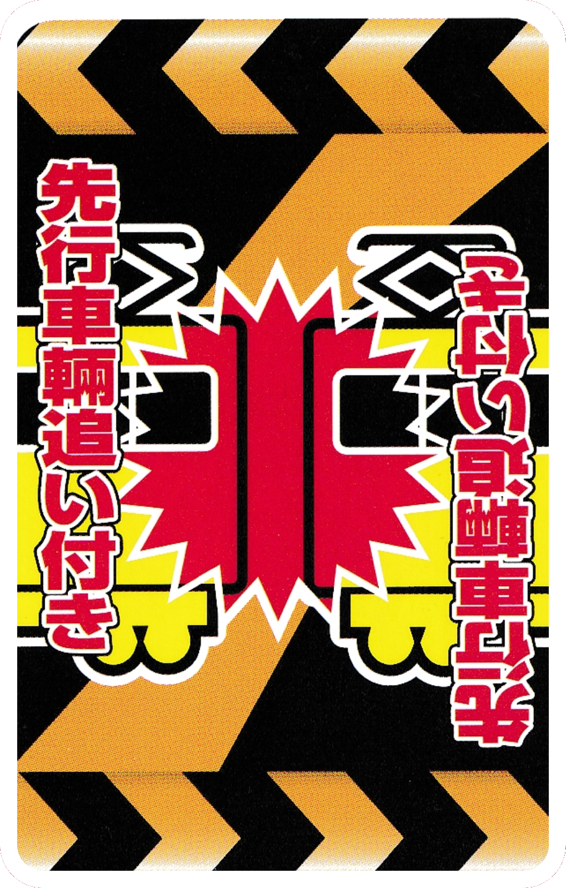

Guard Cards
These cards can negate the effects of Emergency and Signal Cards.

●「GO Signal Card」
This card removes the effects of both STOP and CAUTION signal cards.

●「Emergency Break Card」
This card negates the effects of the Railroad Crossing Accident and Slow Leading Train cards. If you have this in your had when you are targeted, you MUST play this card.